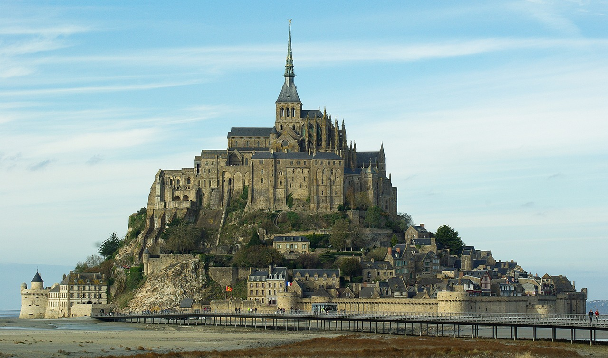
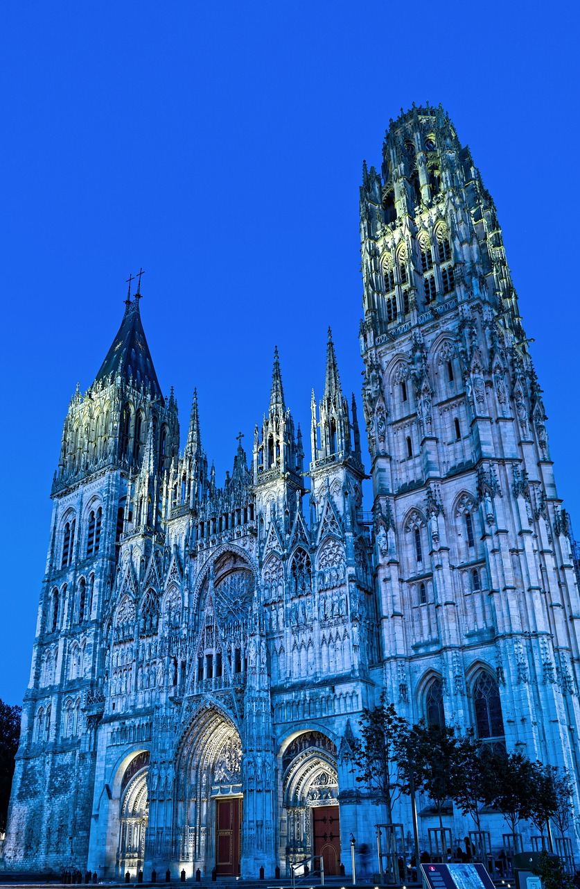
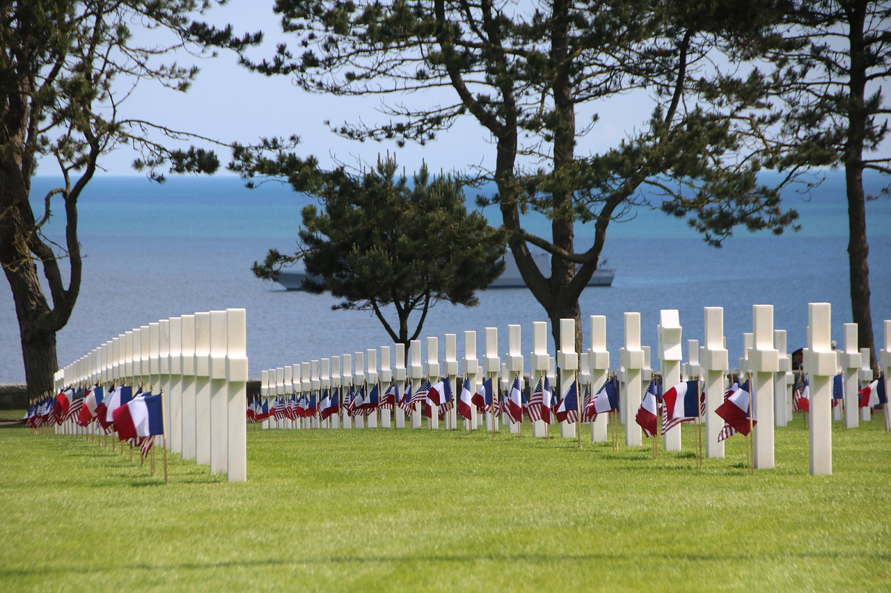
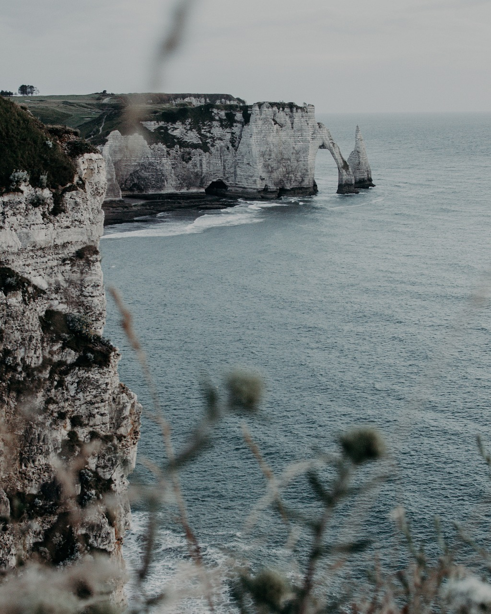

観光名所
- モン サン=ミシェル修道院
- ルーアン大聖堂
- サント カトリーヌ教会
- ノルマンディー米軍戦没者墓地
- エトルタ断崖
観光名所の概要
モン サン=ミシェル修道院

モンサンミッシェルは、フランスの西海岸に浮かぶ小さな島で、「海上のピラミッド」とも呼ばれる世界遺産です。
この島の上には大きくてカッコいい修道院が建っていて、なんと1000年以上前から作られてきました。
満ち潮のときは島が完全に海に囲まれますが、引き潮になると歩いて渡れる道が現れるのが面白いポイント！
昔は監獄にも使われたことがあり、今では多くの観光客が訪れる人気スポットです。
有名なふわふわオムレツや、おしゃれなお土産も楽しめます。
朝昼夜で景色が変わるので、一日中楽しめる不思議なお城のような場所です。
ルーアン大聖堂

ルーアン大聖堂は、フランス北部の歴史ある街ルーアンにある、大きくてとても美しいカトリックの教会です。
12世紀から400年かけて完成し、ゴシック建築の最高傑作と呼ばれています。
入り口のファサード（正面）は細かい彫刻がたくさんあり、まるで石のレース編みのようです。
また、有名な画家モネもこの大聖堂を30回以上描きました。
高さ151メートルの尖塔や、色鮮やかなステンドグラスも見どころです。
夏には大聖堂にプロジェクションマッピングを使った光のショーが行われ、幻想的な雰囲気になります。
入場は無料で、駅からのアクセスもよく、見学もしやすいです。
歴史や美術、建築が好きな人にぴったりのスポットですよ！
サント カトリーヌ教会
サント・カトリーヌ教会は、フランス・ノルマンディー地方の港町オンフルールにある、めずらしい木造の教会です。
もともとあった石の教会は戦争で壊され、15世紀に船大工たちが地元の木材を使って再建しました。
そのため、教会の天井は船をひっくり返したような形になっています。
石の教会とは違い、木のぬくもりを感じられるあたたかい雰囲気が特徴です。
また、教会の鐘楼（しょうろう）は別の建物にあり、現在は美術館として使われています。
印象派の画家モネやブーダンもこの町を訪れており、美しい町並みや教会の姿に多くの人が魅了されています。

ノルマンディー米軍戦没者墓地

ここは、第二次世界大戦のとき、自由のために戦ったアメリカ兵たちが眠る大きなお墓です。
広い緑の芝生の上には、白い十字架や星型の墓標がきれいに並んでいて、まるで静かな海の波のようです。
この墓地は映画『プライベート・ライアン』にも登場したことで有名です。
訪れると、戦争の悲しさや平和の大切さを感じることができます。
ノルマンディーの青い空と広い海を見ながら、歴史を身近に感じてみませんか？
エトルタ断崖

フランス・ノルマンディー地方にあるエトルタ断崖は、白くて大きな崖とエメラルド色の海がとても美しい人気の観光スポットです。
ここは世界的な画家モネも絵に描いたほど有名で、自然が作り出した「象の鼻」みたいな岩や巨大なアーチ型の崖があり、まるで自然の美術館みたい!
崖の上にはよく整備されたハイキングコースがあって、約2時間ほどで絶景を楽しみながら歩けます。
パリからバスや車で3時間くらいなので、日帰り旅行にもおすすめ。
ハイキング以外にも、エトルタの町では新鮮なシーフード料理やかわいい街並みも楽しめます。
海風を感じながら大迫力の自然を体験できる、ワクワクする場所です!
参考
- NEWT編集部. (2024, December 2). フランスの世界遺産モンサンミッシェルへ行こう！歴史や見どころを詳しく解説. NEWT — かしこい、おトク、旅行アプリ. Retrieved May 1, 2025, from https://newt.net/fra/mag-634105214
- NEWT編集部. 2025年3月15日. 「ルーアン大聖堂の見どころと歩き方を徹底解説」. NEWT — かしこい、おトク、旅行アプリ. https://newt.net/fra/mag-937383660731（参照 2025年5月1日）
- 濵口謙司.「ノルマンディーの港町オンフルールのサント・カトリーヌ教会の秘密にせまる」.（2018年10月12日）.Tourisme japonais.https://tourismejaponais.com/2018/10/12/sainte_catherine/（参照2024年6月1日）
- VELTRA旅行ガイド.「驚きと感動の旅!ノルマンディー観光のおすすめスポット16選」.（2024年6月5日）.VELTRA.https://www.veltra.com/jp/guide/international/spot-international/44899/（参照2024年6月6日）